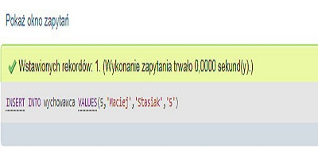
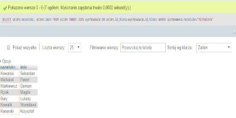

Do pobrania
Wyznaczanie najwyższej średniej:
- Polak
- Nowak
- Rysik
Najwyższa średnia
| Treść zapytania | Zrzut ekranu |
| INSERT INTO wychowawca VALUES(5,'Maciej','Stasiak','5'); |  |
| SELECT uczen.nazwisko, uczen.imie FROM uczen INNER JOIN wychowawca ON uczen.id_klasy=wychowawca.id_klasy WHERE wychowawca.nazwisko="Michalska"; |  |
| CREATE USER 'K_Pietkiewicz'@'localhost' IDENTIFIED BY 'kp_123'; | |
| GRANT SELECT,INSERT ON uczen TO 'K_Pietkiewicz'@'localhost'; |